結構設計（SD）・命題大綱 SD-U2-2・影片講義
建築耐震設計規範
底層邏輯＋解題順序（三層樓例題貫穿）
影片 12:43 ・ 11 章 ・ 30 段
設計地震力 \(V\) 是一道除法：
$$V=\frac{\text{需求 }I\cdot S_{aD}\cdot W}{\text{供給 }1.4\,\alpha_y\,F_u}$$
先釘 T → 再判段 → 後算 Fu → 記得修正 → 三路徑取大 → 三檢核補完
0底層邏輯 V 是一道除法
耐震規範這個單元，條文很多，但關鍵不是死記條文，而是抓住整本規範的底層邏輯，再配上一套解題順序。底層邏輯只有一句話：設計地震力 \(V\)，是一道除法。
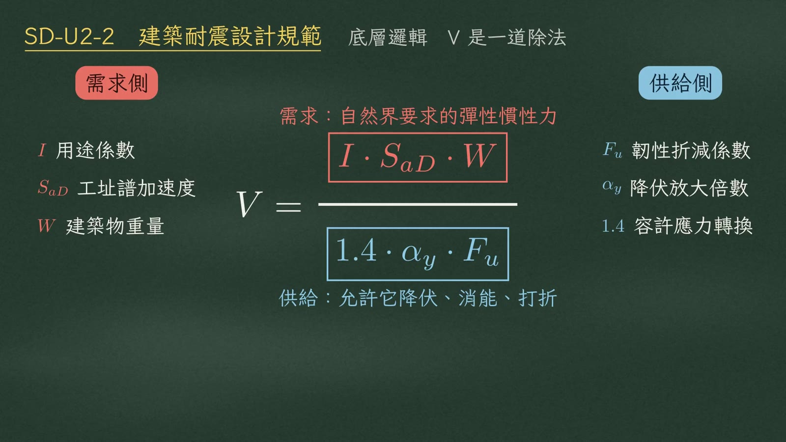
紅框＝需求側（分子）、藍框＝供給側（分母）影片 0:38
$$V=\frac{\color{#c8463c}{I\cdot S_{aD}\cdot W}}{\color{#2f7fb0}{1.4\cdot\alpha_y\cdot F_u}}$$
| 位置 | 內容 | 意義 |
|---|
| 分子・需求 | 用途係數 \(I\) × 工址譜加速度 \(S_{aD}\) × 建築物重量 \(W\) | 自然界要求你承受的彈性慣性力 |
| 分母・供給 | 1.4 × 起始降伏放大倍數 \(\alpha_y\) × 韌性折減係數 \(F_u\) | 你允許結構降伏、消能、打折的程度 |
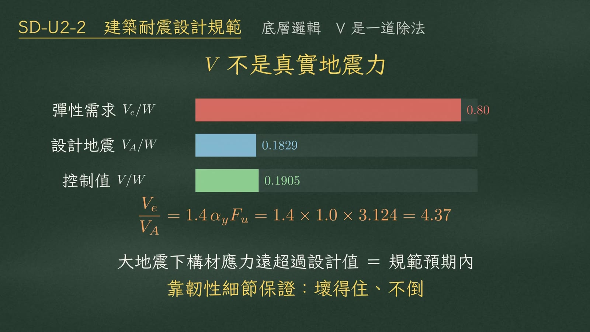
彈性需求 0.80 W（紅）vs. 設計地震 0.1829 W（藍）vs. 控制值 0.1905 W（綠）影片 1:04
所以 \(V\) 不是真實的地震力，而是假設結構會壞、折減過後的設計力。本例彈性需求是 \(0.8W\)，設計地震只剩 \(0.1829W\)，差了 \(1.4F_u\)：
$$\frac{V_e}{V_A}=1.4\,\alpha_y F_u=1.4\times1.0\times3.124=4.37$$
重點大地震下構材應力遠超過設計值，是規範預期內的事，靠韌性細節保證它「壞得住、不倒」。
1例題 工址設計譜
整個單元用同一題貫穿：
| 項目 | 數值 |
|---|
| 結構 | 三層樓 RC 特殊抗彎矩構架，每層高 3.5 m，\(h_n=10.5\) m |
| 重量 | 每層 98.07 tf，總重 \(W=294.2\) tf |
| 工址 | 一般工址，\(S_S=0.80\)、\(S_1=0.45\)；\(F_a=1.0\)、\(F_v=1.2\) |
| 係數 | \(I=1.0\)、\(\alpha_y=1.0\)、\(R=4.8\) |
| 動力分析週期 | \(T_{dyn}=0.7465\) s |
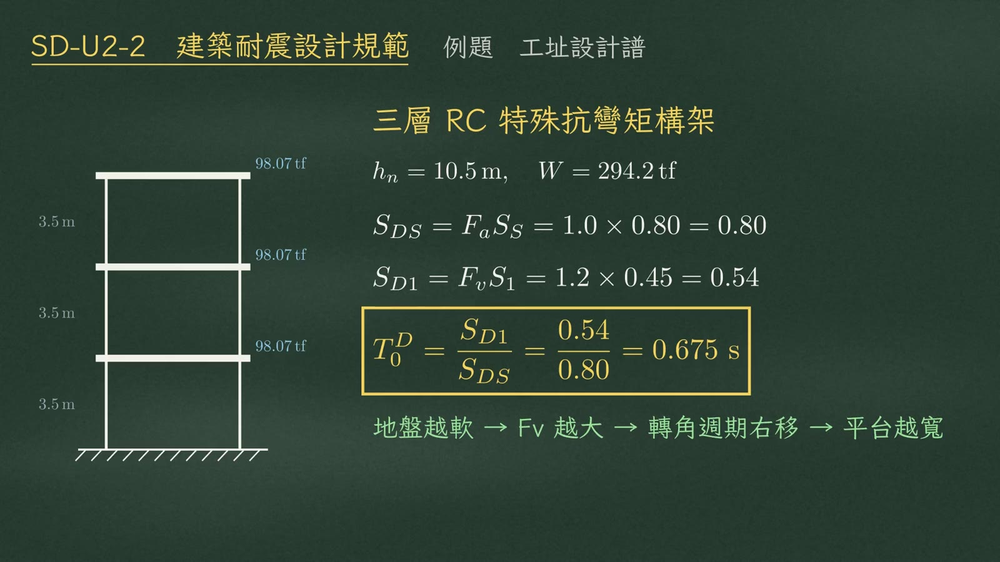
例題已知條件與工址譜參數；\(T_0^D\) 黃框影片 1:54
先算工址譜：
$$S_{DS}=F_aS_S=1.0\times0.80=0.80,\qquad S_{D1}=F_vS_1=1.2\times0.45=0.54$$
$$T_0^D=\frac{S_{D1}}{S_{DS}}=\frac{0.54}{0.80}=0.675\ \text{s}$$
地盤越軟 → \(F_v\) 越大 → 轉角週期越往右 → 平台段越寬。
設計反應譜四段
| 段 | 週期範圍 | \(S_{aD}\) | 說明 |
|---|
| ① 極短週期 | \(T\le0.2T_0^D\) | \(S_{DS}\left(0.4+\dfrac{3T}{T_0^D}\right)\) | 從 \(0.4S_{DS}\) 線性爬升 |
| ② 等加速度平台 | \(0.2T_0^D\lt T\le T_0^D\) | \(S_{DS}\) | 一般中低樓層建築多半落在這裡 |
| ③ 等速度段 | \(T_0^D\lt T\le2.5T_0^D\) | \(S_{D1}/T\) | |
| ④ 下限 | \(T>2.5T_0^D\) | \(0.4S_{DS}\) | 不准無限制遞減 |
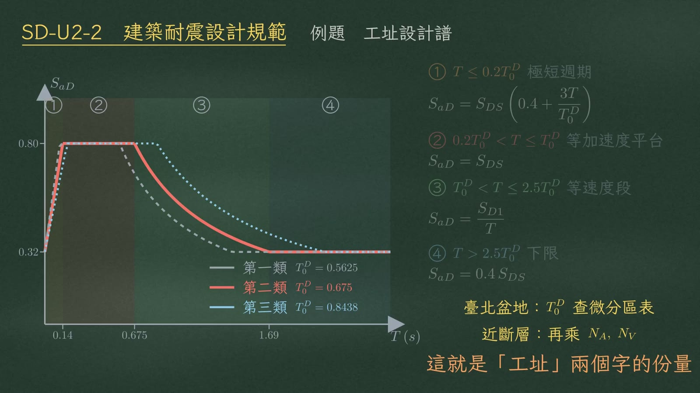
紅實線＝第二類（\(T_0^D=0.675\)）；灰虛線＝第一類（0.5625）；藍點線＝第三類（0.8438）影片 2:40
同一個震區，換成第一類或第三類地盤，整條譜上下左右都會移動。臺北盆地另有微分區，\(T_0^D\) 直接查表；近斷層工址還要再乘近域係數（\(N_A\)、\(N_V\)）。這就是「工址」兩個字的份量。
2第一步 先釘死 T
解題第一步：先把週期 \(T\) 釘死，因為它決定你落在反應譜的哪一段。
| 路線 | 來源 | 數值 |
|---|
| 路線一 | 經驗公式（RC 抗彎矩構架係數 0.070）
\(T=0.070\,h_n^{3/4}=0.070\times10.5^{3/4}\) | 0.4083 s |
| 路線二 | 動力分析 | 0.7465 s |
| 路線三 | 規範上限：經驗值的 1.4 倍，\(1.4\times0.4083\) | 0.5716 s |
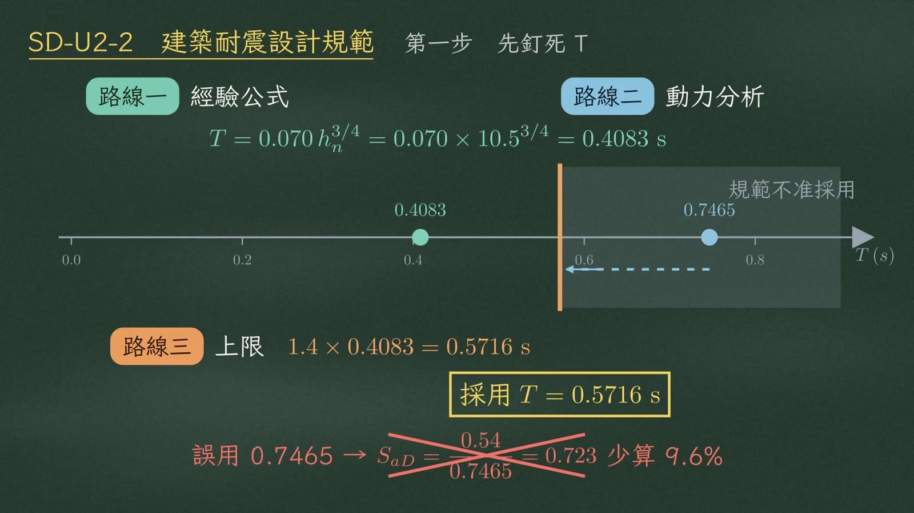
橘線＝1.4 倍上限；右側灰區「規範不准採用」；動力分析值被壓回影片 3:25
動力分析超過上限，就被壓回來，採用 \(T=0.5716\) s。
陷阱：誤用動力分析週期如果誤用 0.7465，會掉到等速度段：\(S_{aD}=\dfrac{0.54}{0.7465}=0.723\)，少算 9.6%。
為什麼要設 1.4 倍天花板？動力分析的週期取決於你給的勁度模型。斷面折減越多，\(T\) 越長，\(S_{aD}\) 越小，地震力越少。規範用這道上限，堵住用軟模型偷減地震力的路。反過來，動力分析的 \(T\) 比經驗值短（\(T_{dyn}\lt T_{emp}\)），就要用短的——規範不讓你少算。
本例結論\(T=0.5716\) s 落在平台段，\(S_{aD}=S_{DS}=0.80\)。
3Fu 的兩條法則
接著算供給側。先把結構系統韌性容量 \(R\)，換成容許韌性容量 \(R_a\)：
$$R_a=1+\frac{R-1}{1.5}=1+\frac{4.8-1}{1.5}=3.5333$$
長週期：等位移法則
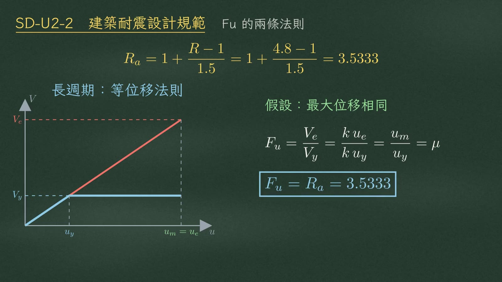
紅＝彈性線、藍＝彈塑性線；最大位移相同 \(u_m=u_e\)影片 4:22
假設彈塑性和彈性結構的最大位移相同：
$$F_u=\frac{V_e}{V_y}=\frac{k\,u_e}{k\,u_y}=\frac{u_m}{u_y}=\mu\quad\Rightarrow\quad F_u=R_a=3.5333$$
中短週期：等能量法則
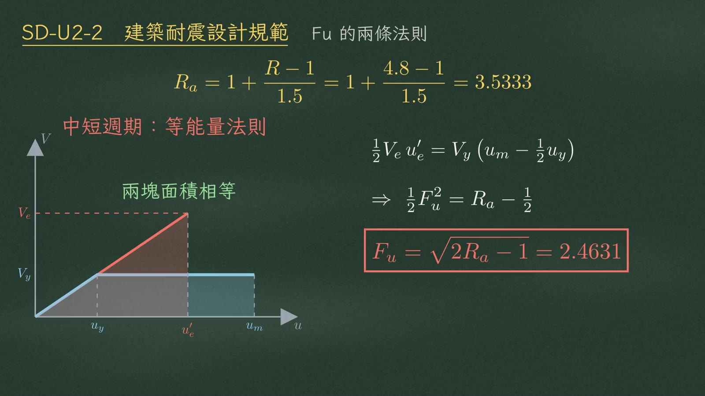
兩塊面積相等：彈性三角形（紅）＝彈塑性梯形（藍）影片 4:46
假設兩者吸收的總應變能相同，也就是力位移圖底下兩塊面積相等：
$$\tfrac12V_e\,u_e'=V_y\left(u_m-\tfrac12u_y\right)\ \Rightarrow\ \tfrac12F_u^2=R_a-\tfrac12\ \Rightarrow\ F_u=\sqrt{2R_a-1}=2.4631$$
| 法則 | 適用 | \(F_u\) |
|---|
| 等位移 | 長週期 | \(R_a=3.5333\) |
| 等能量 | 中短週期 | \(\sqrt{2R_a-1}=2.4631\) |
同一個 \(R_a\)，相差 43.5%。為什麼短週期不能用等位移？因為剛硬的結構降伏後，位移會「跑掉」，\(u_m\gg u_e\)，只好退而求其次，用能量守恆換算。
結論中短週期 \(F_u\) 較小 → 設計力較大 → 比較保守。
4Fu 隨週期的四段
所以同一棟樓的 \(F_u\) 不是常數，它隨週期從 1 長到 \(R_a\)，分四段：
| 段 | 週期範圍 | \(F_u\) |
|---|
| ① 線性長 | \(T\lt 0.2T_0^D\) | 從 1 線性長到 \(\sqrt{2R_a-1}\) |
| ② 定值 | \(0.2T_0^D\le T\lt 0.6T_0^D\) | \(\sqrt{2R_a-1}\) |
| ③ 線性內插 | \(0.6T_0^D\le T\lt T_0^D\) | \(\sqrt{2R_a-1}\to R_a\) |
| ④ 等位移 | \(T\ge T_0^D\) | \(R_a\) |
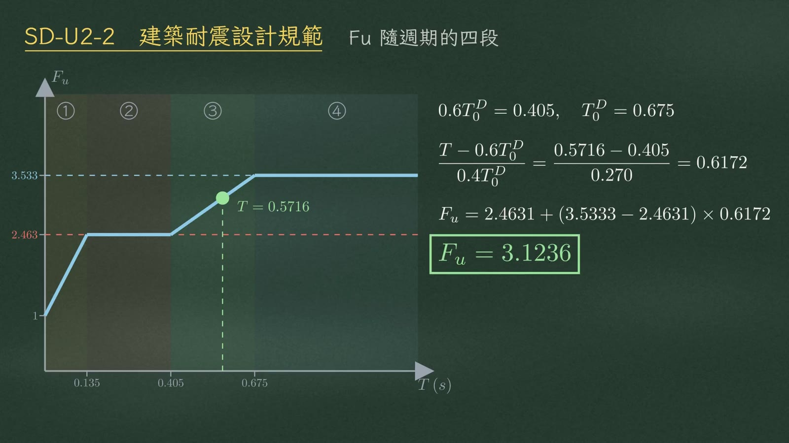
分段點 0.135／0.405／0.675 s；綠點＝本例 \(T=0.5716\)，落在第③段影片 6:00
本例 \(T=0.5716\)，\(0.6T_0^D=0.405\)、\(T_0^D=0.675\)，落在第三段內插：
$$\frac{T-0.6T_0^D}{0.4T_0^D}=\frac{0.5716-0.405}{0.270}=0.6172$$
$$F_u=2.4631+(3.5333-2.4631)\times0.6172=3.1236$$
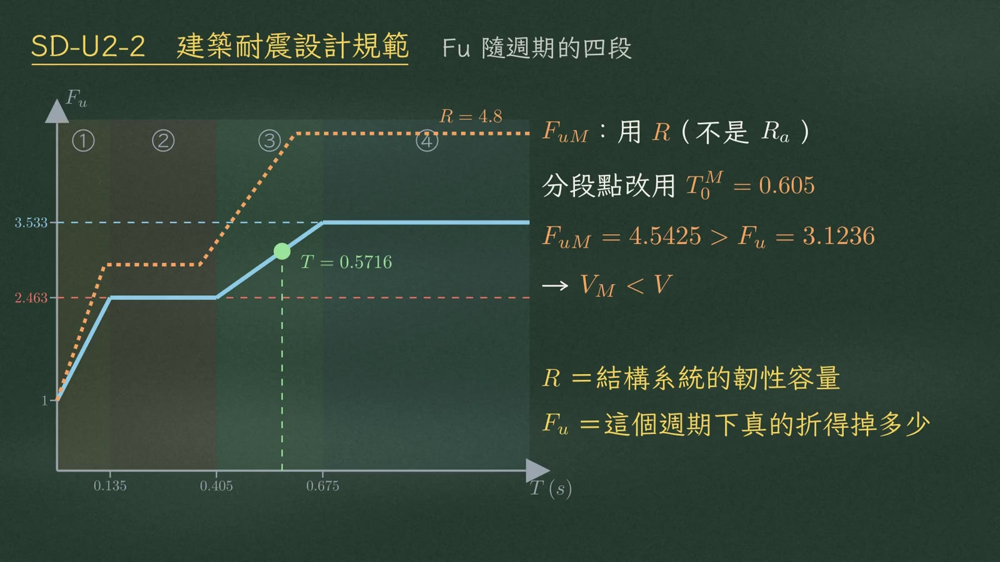
橘點線＝最大考量地震的 \(F_{uM}\)（用 \(R=4.8\)、分段點 \(T_0^M=0.605\)）影片 6:24
最大考量地震另外算一條 \(F_{uM}\)：用 \(R\)，不是 \(R_a\)，分段點改用 \(T_0^M\)，本例 0.605。算出 \(F_{uM}=4.5425>F_u=3.1236\)，所以 \(V_M\) 反而比 \(V\) 小。
記住\(R\) 是結構系統的韌性容量；\(F_u\) 是這個週期下你真的折得掉多少。兩者不是同一件事。
5記得修正 (SaD/Fu)m
折減完還要修正一次。先算 \(S_{aD}/F_u\)，判斷落在哪一段：
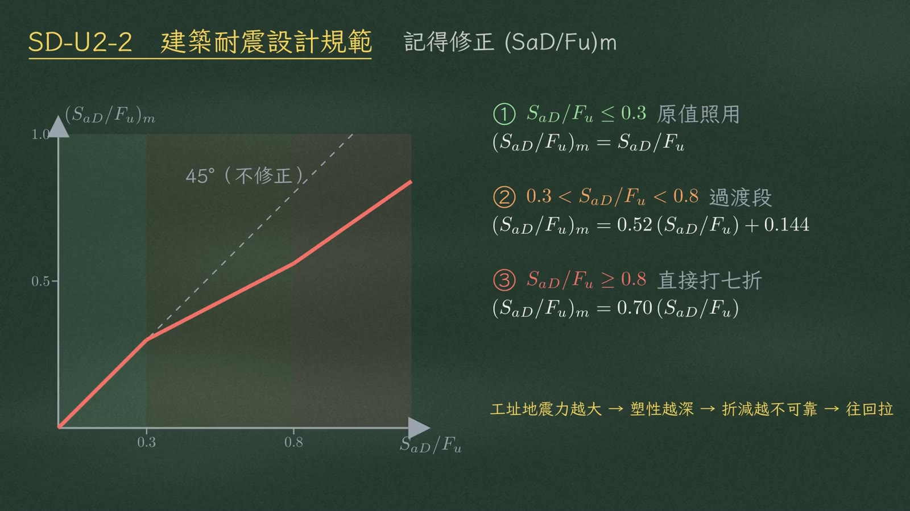
紅線＝修正後；灰虛線＝45°（不修正）影片 6:51
| 段 | 範圍 | \((S_{aD}/F_u)_m\) |
|---|
| ① 原值照用 | \(S_{aD}/F_u\le0.3\) | \(S_{aD}/F_u\) |
| ② 過渡段 | \(0.3\lt S_{aD}/F_u\lt 0.8\) | \(0.52\,(S_{aD}/F_u)+0.144\) |
| ③ 直接打七折 | \(S_{aD}/F_u\ge0.8\) | \(0.70\,(S_{aD}/F_u)\) |
地震力越大的工址，結構進入塑性越深，折減越不可靠，規範就把折減後的值往回拉。
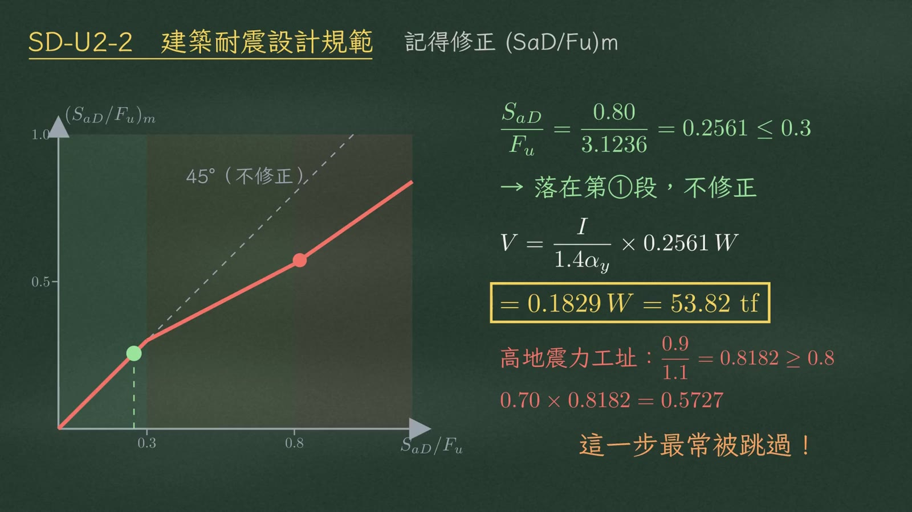
綠點＝本例 0.2561（第①段）；紅點＝高地震力工址 0.8182影片 7:18
$$\frac{S_{aD}}{F_u}=\frac{0.80}{3.1236}=0.2561\le0.3\ \Rightarrow\ \text{不修正}$$
$$V=\frac{I}{1.4\alpha_y}\times0.2561\,W=0.1829\,W=53.82\ \text{tf}$$
陷阱：這一步最常被跳過如果換成高地震力工址，比值 \(\dfrac{0.9}{1.1}=0.8182\ge0.8\)，就要打七折：\(0.70\times0.8182=0.5727\)。
6三水準地震 三條路徑
規範不是只算一次地震力，而是同一棟樓算三次。
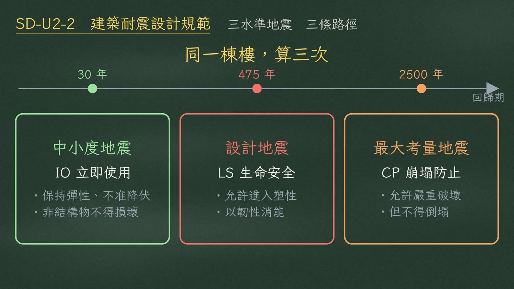
回歸期 30／475／2500 年對應三種性能目標影片 7:48
| 地震水準 | 回歸期 | 性能目標 | 要求 |
|---|
| 中小度地震 | 30 年 | IO 立即使用 | 結構完全保持彈性、不准降伏 |
| 設計地震 | 475 年 | LS 生命安全 | 允許進入塑性、以韌性消能 |
| 最大考量地震 | 2500 年 | CP 崩塌防止 | 允許嚴重破壞，但不得倒塌 |
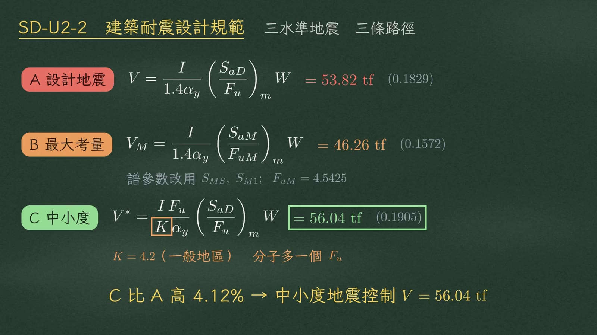
C 路徑綠框＝控制值；橘框標出分母的 \(K\)影片 8:35
$$\textbf{A 設計地震：}\ V=\frac{I}{1.4\alpha_y}\left(\frac{S_{aD}}{F_u}\right)_m W=53.82\ \text{tf}\quad(V/W=0.1829)$$
$$\textbf{B 最大考量：}\ V_M=\frac{I}{1.4\alpha_y}\left(\frac{S_{aM}}{F_{uM}}\right)_m W=46.26\ \text{tf}\quad(0.1572)$$
$$\textbf{C 中小度：}\ V^*=\frac{I\,F_u}{K\,\alpha_y}\left(\frac{S_{aD}}{F_u}\right)_m W=56.04\ \text{tf}\quad(0.1905)$$
路徑 B 的譜參數改用 \(S_{MS}\)、\(S_{M1}\)，\(F_{uM}=4.5425\)。路徑 C 的分母不再是 \(1.4\alpha_y\)，而是地區係數 \(K\) 乘 \(\alpha_y\)，一般地區 \(K=4.2\)；而且分子多了一個 \(F_u\)。C 比 A 高 4.12%。
本例由中小度地震控制，\(V=56.04\) tf。
7誰控制設計 V*/V
為什麼韌性好的結構，反而被小地震控制？把 C 除以 A，修正項和重量都消掉：
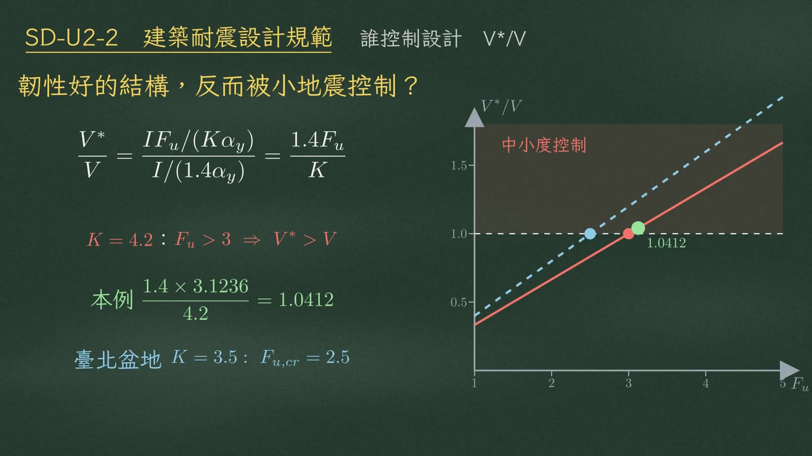
紅實線＝\(K=4.2\)；藍虛線＝\(K=3.5\)（臺北盆地）；比值 > 1 的區域為中小度控制影片 9:00
$$\frac{V^*}{V}=\frac{I F_u/(K\alpha_y)}{I/(1.4\alpha_y)}=\frac{1.4F_u}{K}$$
- \(K=4.2\)：\(F_u>3\) 時 \(V^*>V\)。本例 \(\dfrac{1.4\times3.1236}{4.2}=1.0412\)。
- 臺北盆地 \(K=3.5\)：臨界 \(F_{u,cr}=2.5\)。
物理原因：中小度地震要求結構保持彈性、不准降伏，只給固定的 \(1/K\) 折減；韌性再好，也免除不了日常小震不壞的義務。長週期時（\(F_u=R_a\)）：
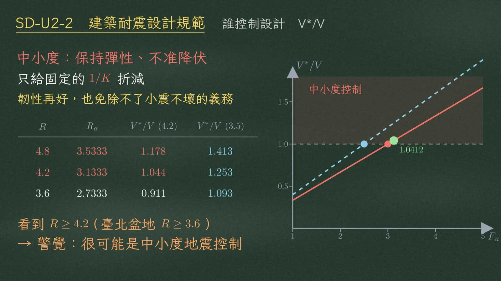
長週期 \(F_u=R_a\) 時各系統的 \(V^*/V\)影片 9:31
| \(R\) | \(R_a\) | \(V^*/V\)（\(K=4.2\)） | \(V^*/V\)（\(K=3.5\)） |
|---|
| 4.8（特殊抗彎矩構架） | 3.5333 | 1.178 | 1.413 |
| 4.2（偏心斜撐） | 3.1333 | 1.044 | 1.253 |
| 3.6 | 2.7333 | 0.911 | 1.093 |
警覺訊號看到 \(R\ge4.2\)，或臺北盆地 \(R\ge3.6\)，就要警覺：很可能是中小度地震控制。
8豎向分配 Ft、Fi、M0
\(V\) 只是總量，要按「重量 × 高度」灑回各樓層，才是設計用的力。
第一步：頂部集中力 \(F_t\)
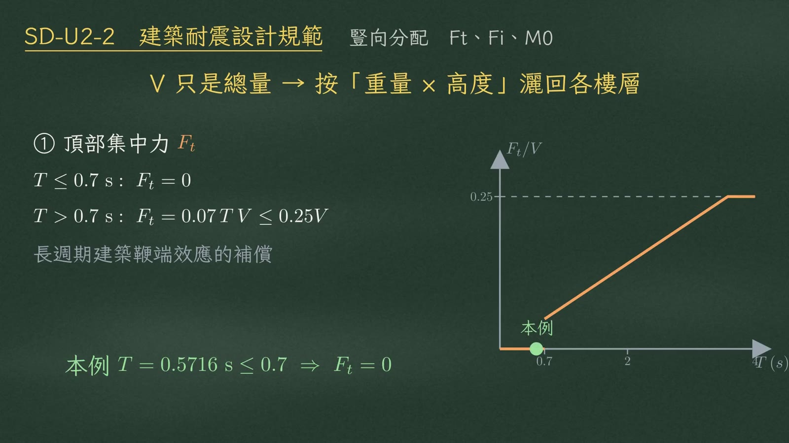
\(F_t/V\) 隨 \(T\) 變化；綠點＝本例 \(T=0.5716\) s影片 9:57
$$T\le0.7\ \text{s}:\ F_t=0;\qquad T>0.7\ \text{s}:\ F_t=0.07\,T\,V\le0.25V$$
這是長週期建築鞭端效應的補償。本例 \(T=0.5716\ \text{s}\le0.7\)，\(F_t=0\)。
第二步：各層側力 \(F_i\)
$$F_i=\frac{w_ih_i}{\sum w_jh_j}\,(V-F_t)$$
每層重量相同，權重就是高度比，1 : 2 : 3。
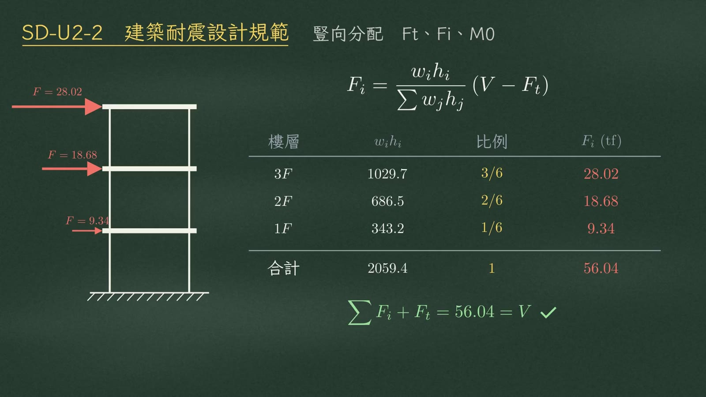
倒三角形側力分配影片 10:22
| 樓層 | \(w_ih_i\) | 比例 | \(F_i\)（tf） | 層剪力 \(V_i\)（tf） |
|---|
| 3F | 1029.7 | 3/6 | 28.02 | 28.02 |
| 2F | 686.5 | 2/6 | 18.68 | 46.70 |
| 1F | 343.2 | 1/6 | 9.34 | 56.04 |
| 合計 | | 1 | 56.04 | |
檢查\(\sum F_i+F_t=56.04=V\) ✓
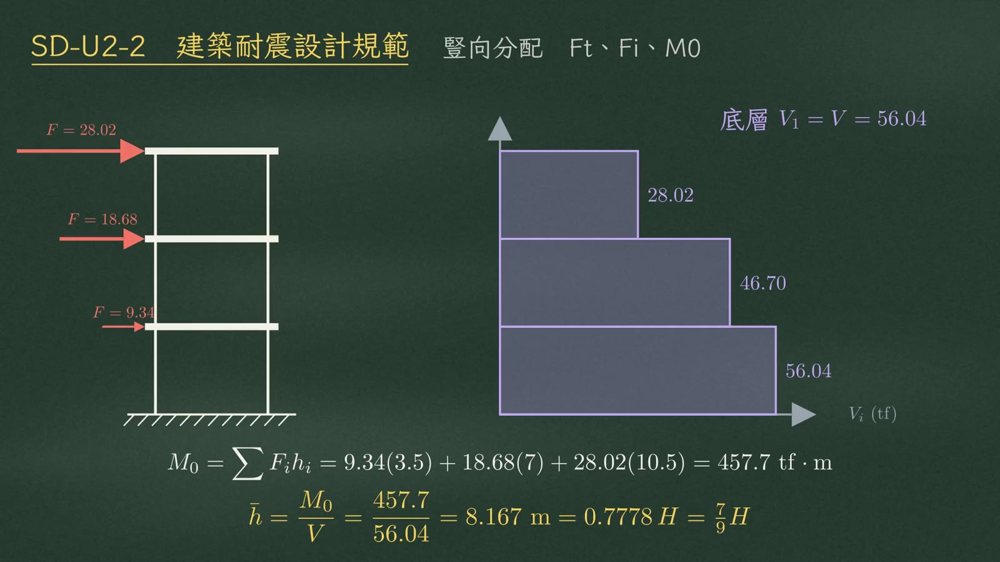
層剪力由上往下累加；底層 \(V_1=V=56.04\)影片 10:48
層剪力由上往下累加：三樓 28.02，二樓 46.7，底層 56.04，必然等於 \(V\)。
$$M_0=\sum F_ih_i=9.34(3.5)+18.68(7)+28.02(10.5)=457.7\ \text{tf}\cdot\text{m}$$
$$\bar h=\frac{M_0}{V}=\frac{457.7}{56.04}=8.167\ \text{m}=0.7778H=\tfrac79H$$
驗證等效作用高度 \(\bar h=0.7778H\)，剛好是三層樓的解析值 \(\tfrac79H\)。
9V 之外的三道檢核
\(V\) 算對了不代表過關，還有三道獨立檢核。
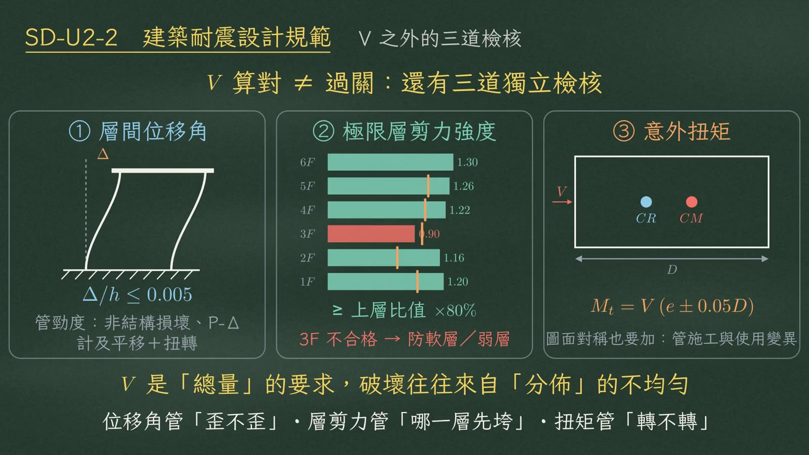
①位移角 ②極限層剪力強度（3F 紅條＝不合格）③意外扭矩影片 11:47
| 檢核 | 規定 | 管什麼 |
|---|
| ① 層間相對側向位移角 | 同一層上下樓版的位移差除以層高，\(\Delta/h\le0.005\)；計算時須計及平移與扭轉 | 管勁度：防止非結構物損壞與 P-Δ 效應 |
| ② 極限層剪力強度 | 任一層強度與設計層剪力的比值，不得低於上一層比值的 80% | 防止軟層、弱層 |
| ③ 意外扭矩 | 即使圖面完全對稱、計算偏心為零，仍須強制加上 ±5% 樓版尺寸的偶然偏心：\(M_t=V(e\pm0.05D)\) | 管施工與使用的變異 |
一句話\(V\) 是「總量」的要求，但破壞往往來自「分佈」的不均勻。位移角管「歪不歪」，層剪力管「哪一層先垮」，扭矩管「轉不轉」。
10總結 五道防呆
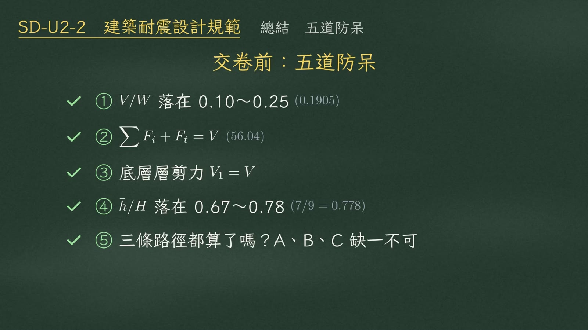
交卷前逐條打勾影片 12:15
交卷前：五道防呆
① \(V/W\) 落在 0.10～0.25 之間（本例 0.1905）
② \(\sum F_i+F_t=V\)（56.04）
③ 底層層剪力 \(V_1=V\)
④ \(\bar h/H\) 落在 0.67～0.78 之間（\(7/9=0.778\)）
⑤ 三條路徑都算過了嗎？A、B、C 缺一不可
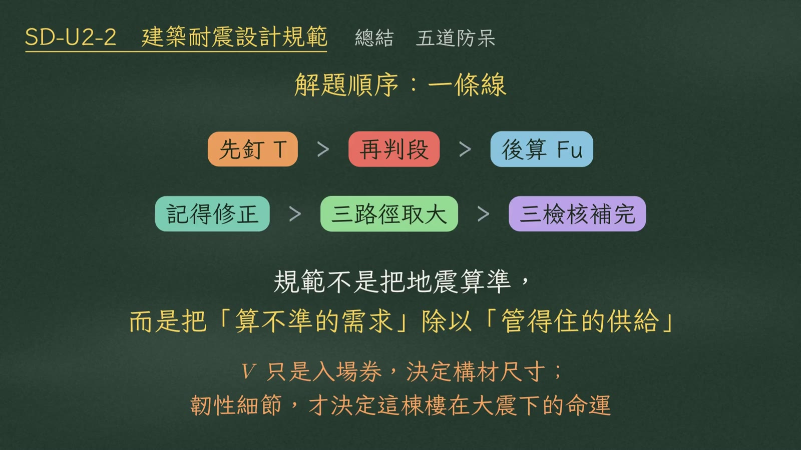
解題順序收成一條線影片 12:41
先釘 T›
再判段›
後算 Fu›
記得修正›
三路徑取大›
三檢核補完
結語規範不是把地震算準，而是把「算不準的需求」除以「管得住的供給」。\(V\) 只是入場券，它決定構材尺寸；韌性細節，才決定這棟樓在大震下的命運。